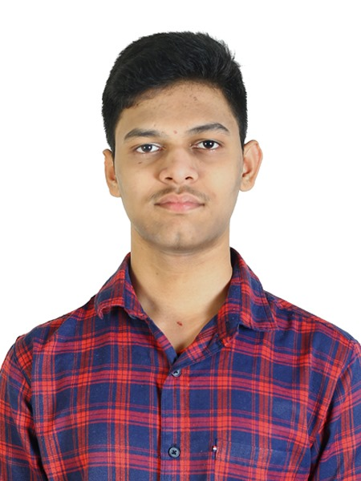

Uday Kiran Kottakota

Summary
Motivated and detail-oriented 19-year-old undergraduate student currently pursuing studies at IIIT Dharwad, with a strong passion for Web Development,
Animation, and Gaming. Adept at building user-friendly websites, exploring creative design solutions, and applying problem-solving skills in technical and collaborative projects.
Enthusiastic about leveraging innovative technologies to craft engaging digital experiences and eager to contribute to dynamic, forward-thinking teams.
Education:
Secondary Education - 2020-2021
- Sri Chaitanya International Olympiad School, Vijayawada, Andhra Pradesh, India
Higher Secondary Education - 2021-2023
- Resonance Senior College, Vijayawad, Andhra Pradesh, India
Undergraduate Engineering - 2023-2027
- Indian Institute of Information Technology, Dharwad, Karnataka, India
Work Experience:
- Freelance Web Developer
- Designed and developed responsive websites for small businesses, focusing on user experience and modern design principles.
- Implemented features using HTML, CSS, JavaScript, and frameworks like React or Bootstrap.
- Collaborated with clients to understand requirements, deliver projects on time, and ensure client satisfaction.
- Animation Enthusiast | Personal Projects
- Created 2D/3D animations to explore storytelling and visual design concepts using tools like Blender or Adobe Animate.
- Published projects online to showcase creativity and technical proficiency in animation.
- Experimented with character rigging, motion graphics, and visual effects to enhance animation quality.
- Club Member | College Clubs: Techniosys & MLSA (Microsoft Student Learning Ambassador)
- Conducted and participated in workshops and webinars to promote learning in web development, cloud computing, and other Microsoft technologies.
- Collaborated with peers to organize coding events and hackathons, fostering a culture of innovation and learning among students.
- Developed technical resources and shared knowledge on platforms like GitHub or LinkedIn to help peers upskill in emerging technologies.
Skills:
- Communication Skills
- Leadership & Team Managment
- Problem-Solving Skills
- Microsoft Tools Proeficiency
Achievements:
- Overall CGPA: 9.65
- Got Third in Inquisitive Quiz
More About Me: